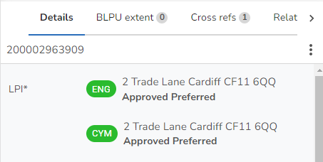

Depending upon the tab you have selected on the Property form the details will be different.
Details associated with the Basic Land & Property Unit (Type 21) covering the status of the property, its coordinates and its Representative Point Code (RPC) are displayed when you click on the Details tab of the Property form. The top of the form displays the LPI details and, if the record is a child, then the parent address is displayed "Child of", along with an option to display "All related" records i.e. other children. BLPU logical statusThis is the Logical Status for the BLPU. It describes the current life-cycle state of a BLPU and provides information on the level of confidence with which the record can be treated. It is intended that there will be gradual migration to one approved address. A code has also been allocated for provisional entries. RPCRepresentative Point Code (or Relative Positional Accuracy). Quality statement with regard to the accuracy of a grid coordinate assigned to a BLPU. E.g. Visual Centre. State & State date(England & Wales only) The current state of the BLPU and the date at which the BLPU achieved its current state in the real world. Note: The Hub do not want to receive records where the BLPU State is either 5=Planning application received or 7=Planning Permission refused. For properties with these BLPU State codes please check the "Exclude from Export" check box in order that the properties are not included in the normal export to the Hub. Level(Scotland only) Memorandum of the vertical position of the BLPU. Level is entered as a number, e.g. -1 (basement) 0 (ground floor) 1 (first floor) 1.5 (an intermediate/mezzanine floor) Classification(England & Wales only) The classification for the BLPU which is split into Primary, Secondary and Tertiary sub sets. Organisation(England & Wales only) The name of the current commercial occupier of the BLPU. Ward(England & Wales only) The Electoral ward (England) or Electoral division (Wales) name in which the BLPU is situated. If the LLPG Administrator has imported the Ward polygon data then this will be populated automatically. Parish(England & Wales only) The Parish in which the BLPU is situated. If the LLPG Administrator has imported the Parish polygon data then this will be populated automatically. AuthorityThe Local Authority who is a custodian of the address. Representative point coordinate Easting / NorthingA pair of X / Y co-ordinates representing the visual centre of the BLPU. Exclude from exportYou would check this box if you have created a BLPU that you require for your own LLPG (say a bus stop) which the NLPG does not require. Site visit requiredCheck this entry if this property requires a site visit. Start dateThe date on which this BLPU was defined. End dateThe date on which this BLPU ceased to exist or became an Historic or Rejected Internal status. This will only be displayed where the BLPU Logical Status is 8=Historic or 9=Rejected Internal. |
LPIs (Type 24) are postal addresses or other descriptive names that can be used to identify a particular BLPU. There is no restriction on the number of LPIs that can be assigned to a BLPU, so the LPIs for a hotel could be its postal address 10 High Street , as well as its name "The White Horse". Each BLPU point must have at least one LPI which has the same Logical Status as the BLPU. These are displayed on the Details tab of the Property form in a list at the top e.g.  Click on an entry to display the following details. LanguageThis is the language used for the descriptive identifier. This will always be English unless your authority is a dual language authority. LPI logical statusThis is the Logical Status for the LPI. It describes the current life-cycle state of a BLPU or LPI and provides information on the level of confidence with which the record can be treated. In the case of LPIs it is also possible to flag them as alternative addresses. These can be used for search purposes within the LLPG. It is intended that there will be gradual migration to one approved address. A code has also been allocated for provisional entries. SAOSecondary Addressable Object. This is the number, name or description used to identify a BLPU child within a larger BLPU such as a sub-building; it may be within the same premises as a flat in a house or a factory sub-unit etc. If there is an entry in the Parent UPRN, data should be present in at least one of the following SAO attributes in one LPI Record. •Start No •Description Both can exist if they are part of the address for the BLPU. Start no./suffix This is the number of the property. Where there is a range of property numbers e.g. 6-15 this is the start of the property number range. Start suffix may be used in cases such as "6A" Knights Road. Only one character is allowed unless the Metadata Language is set as Bilingual when two are allowed. End no./suffix Where there is a range of property numbers, this is the number at the end of the range. Where there is a range of suffix numbers, this is the suffix at the end of the range. Only one character is allowed unless the Metadata Language is set as Bilingual when two are allowed. Description This can be the premise name such as "Garden Flat". PAOPrimary Addressable Object. This is the number, name or description used to identify a Property. Data must be present in at least one of the following PAO attributes in each LPI Record. •Start No •Description Both can exist if they are part of the address for the BLPU. Start no./suffix This is the property number such as "6" Knights Road. Where there is a range of property numbers e.g. 6-15 this is the start of the property number range. Start suffix may be used in cases such as "6A" Knights Road. Only one character is allowed unless the Metadata Language is set as Bilingual when two are allowed. End no./suffix Where there is a range of property numbers, this is the number at the end of the range. Where there is a range of suffix numbers, this is the suffix at the end of the range. Only one character is allowed unless the Metadata Language is set as Bilingual when two are allowed. Description This can be the premise name such as "Fairway Court", or the name of the organisation occupying the BLPU such as Idox Group plc or a description of the BLPU e.g. Land at corner of.... StreetThe name of the street where the BLPU is located. Post townThe name of the town in which the currently selected property is located. This is the name given by the Royal Mail as the Postal Town for the address. Sub-locality(Scotland only) The third level of geographic area name. e.g. to record an island name or property group. PostcodeThe postcode for the property Level(England & Wales only) Memorandum of the vertical position of the BLPU e.g. Roof Garden Official addressThis flag indicates how this LPI corresponds to the form of property address approved by the Street Naming and Numbering Authority. Y = Official Address N = Unofficial Address R = Postcode and post town requested from the Royal Mail - not Scotland C = Postal Address confirmed and ready for notification - not Scotland Blank = Not defined Postal addressThis is to indicate that the address receives a delivery from the Royal Mail or other postal delivery service. Depending upon the value selected a Post Town or Postcode may be required e.g.
Start dateThe date on which this LPI was created. End dateThe date on which this LPI ceased to exist. This will only be displayed where the BLPU Logical Status is 8=Historic or 9=Rejected Internal. LPI keyThe unique key for the LPI record which is automatically generated when an LPI is created. |
Multiple provenance boundaries may be recorded for each BLPU point. Each boundary is assigned a provenance code (Type 22). For example the provenance code for parcel boundaries is "Physical Features". This information is displayed when you click on the Provenances tab of the Property form. Click on an entry in the list to display the details. ProvenanceThis is the type of provenance e.g. Physical Features, Formal Tenancy Agreement etc. AnnotationText that you might wish to annotate your provenance. Start dateThe date on which this BLPU Provenance was created. End dateThe date on which this BLPU Provenance ceased to exist. This date will only be set if you make a BLPU provenance historic. Provenance keyThe unique key for the Provenance record which is automatically generated when a provenance is created. |
Cross-references are unique identifiers that link the property (BLPU) to external applications (Type 23) e.g. electoral role, council tax, address-point data. This information is displayed when you click on the Cross refs tab of the Property form. Click on an entry in the list to display the details. SourceThis represents the application to which the cross-reference relates. Cross referenceEnter the cross-reference (unique key) to the application selected as the Source above. Start dateThe date on which this Cross Reference was created. End dateThe date on which this Cross Reference ceased to exist. Cross reference keyThe unique key for the Cross reference record which is automatically generated when a cross reference is created. |
The BLPU Note details show all of the BLPU Notes for a particular BLPU. All the Notes associated with a Property are displayed on the Notes tab of the Property form. Click on an entry in the list to display the details. NoteThe details of the Note which can be up to 4000 characters. |
(Scotland only) The Classification entry defines the Classification Type and the Classification scheme from which the type is taken. Each BLPU point must have at least one Classification entry. This information is displayed when you click on the Classification tab of the Property form. Click on an entry in the list to display the details. ClassificationThe classification for the BLPU which is split into Primary, Secondary and Tertiary sub sets. SchemeThis is the name of the Classification Scheme used for this entry. Start DateThe date on which this Classification record was created. End DateThe date on which this Classification record ceased to exist. Classification keyThe unique key for the Classification record which is automatically generated when a Classification is created. |
(Scotland only) The Organisation is the name of the current occupier on the fascia of the BLPU. This information is displayed when you click on the Organisations tab of the Property form. Click on an entry in the list to display the details. OrganisationThis is the name of the current occupier on the fascia of the BLPU. Legal NameThis is the registered legal name of the organisation. Start DateThe date on which this Organisation record was created. End DateThe date on which this Organisation record ceased to exist. Organisation keyThe unique key for the Organisation record which is automatically generated when a Organisation is created |
(Scotland only) The property successor cross reference (Type 30) provides for historical links between properties in the event of splits and merges. This information is displayed when you click on the Successors tab of the Property form. Click on an entry in the list to display the details. Note: Multiple successor cross reference records can be held for a single BLPU, e.g. where a property has been split into multiple new properties. SuccessorThis is the UPRN for the previous property. Start DateThe date on which this Successor record was created. End DateThe date on which this Successor record ceased to exist. Successor keyThe unique key for the Successor record which is automatically generated when a successor is created |